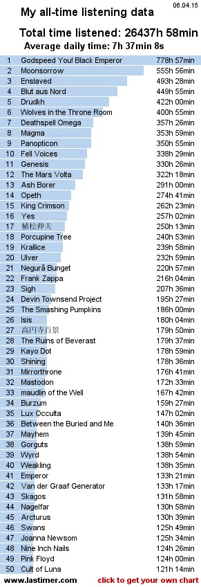
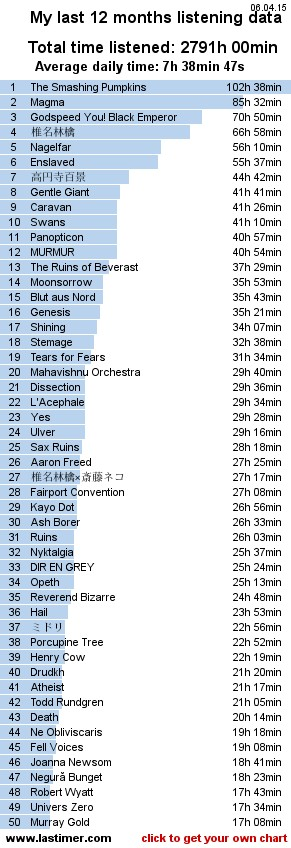

When you get into the truly grim metal paradigm of deadly death and extreme frosty blackness, there’s only a couple of ways you can get out. One is death; the other is mental institutions. (R.I.P. last.fm groups.)
Home until I scrape up the funds to move: Sarasota, FL (I’d been wanting to move to Washington, D.C., for a long time, but at this rate I don’t know if it’ll ever actually happen, and at this rate there is a nonzero chance that if I move, it’ll be either to Los Angeles or outside the country entirely)
I rip vinyl records. I also remaster poorly mastered CDs. Most of my vinyl collection (when I keep it up to date) is here. Up until 2014 when grossly increased insurance costs forced me to stop, I used to buy a record or more a week. My vastly decreased income now makes record purchases a much rarer thing for me than I’d like them to be.
My music taste tends towards metal, prog, soundtracks, and music of varying other genres. I don’t generally have genre prejudices (although I dislike certain kinds of country and pop). If something is potentially good, I’ll be willing to listen to it. I also don’t care too much about lyrics or ideology in the music I listen to (you can find plenty of ‘loved’ tracks in my library with questionable or even downright repulsive lyrics, which of course means I loved their musical qualities despite their lyrics), although I generally stop short of lending monetary support to acts with repulsive ideologies. My last.fm is overall a fairly accurate representation of my taste, but I don’t have a lot of plays for some music I love that gets played on the radio all the time – for instance, basically any Motown hit you care to name.
I have a four-year degree in political science and am working towards another in information technology. I’m a registered Democrat because we have a two-party system and thus no other choice. Duverger’s Law. (Incidentally, fuck first-past-the-post voting; it was a frequently unacknowledged factor in ‘electing’ the tiny-fingered, Cheeto-faced, ferret-wearing shitgibbon.) My political views are perhaps best described as ‘libertarian socialist’ (not a contradiction despite what American ‘libertarians’ will tell you; the oldest strains of socialism were in fact libertarian and the oldest strains of libertarianism were in fact socialist). TV Tropes’ article on anarchism, of all things, is a good factual overview of another major influence on my thought.
As I get older I find myself less and less able to care about ordinary religious groups at all. As long as people abstain from persecution (which, to be fair, a lot of American religious groups fail to do) I couldn’t care less. On the other hand, I strongly detest cults. (And yes, Scientology is a cult. So are a number of right-wing ‘Christian’ groups, who wouldn’t know Jesus’ actual teachings if he smacked them upside the head with them... which he wouldn’t have done, because he was a pacifist.) I personally have very little resembling religious beliefs, apart from disbelief in an omnipotent, benevolent god, or really any kind of omnipotent deity (the entire idea of omnipotence is inherently paradoxical); it’s also not something I think about much, because I also believe that if deities of any sort existed, they would be incomprehensible to humanity.
I compose music, but I’m no longer interested in having my full name up where it can be directly equated with this screen name, which I’ve used across the Internet. If you want to hear it, private message me. I also play piano and sing competently and have begun to record some rather primitive performances of mine. Again, private message me if you want a link to my SoundCloud or to downloads.
I also do a lot of writing. I’ve written on a near-daily basis for most of my life, and I’ve gotten quite good at it. I also have good reason to believe that I have a unique perspective to offer and worthy, interesting stories to tell that can provide realistic sources of hope to people who currently lack it. At the same time, I have no desire for any sort of fame, and will almost certainly publish under a pseudonym should I manage to get some kind of publishing or production deal. I’ll be willing to share samples of my writing with people I trust, however.
If I both don’t know you and don’t share significant amounts of music taste with you, I’ll probably ignore your friend request. I’m not in this to accumulate the highest friend count. (Well, we have ‘followers’ now. I probably won’t even notice if you follow me unless you tell me now, because last.fm designers apparently don’t think we’d like to know when we have new followers. I’m still not entirely sure what the point of even having them is right now; I guess now that they finally restored the ‘friends who listen’ feature it’s not completely pointless, but I’m too lazy to care much.)
Note that the times I’m displayed as listening to various tracks are almost certainly incorrect, especially in the last several months. These days I do nearly all of my listening either via portable media player (car stereo, iPod, FiiO) or on my phone, and I can’t be bothered keeping those times accurate because I haven’t been able to find a scrobble software that will reliably keep track of all my mobile listens without dropping some, so I just play them muted on my computer when I get home. All the stuff in my account is stuff I genuinely have listened to or am going to listen to in the near future, though.
Things I will share:
Things I will not share:
Go see concerts, also, too.
I used to speak Spanish fluently and German passably, but I haven’t had any experience with either of them in literally years. I probably can still understand Spanish reasonably well but probably can’t formulate grammatical sentences anymore. One of these days I intend to renew my fluency in Spanish and perhaps learn Swedish, Norwegian, Hebrew, and/or Japanese.
It’s really sad how much this collection of widgets has dwindled since last.fm’s August 2015 ‘update’. I doubt most people see much point to maintaining them since people can’t put them in their profiles anymore. Just another reason the new site sucks.
(Note: The charts below were actually more accurate reflections of my taste than the charts on my main page, since they’re adjusted for song length; however, they also haven’t been updated since 2015.)


At 83 tracks per day, Cassandra-Leo will reach 1,000,000 plays on December 8, 2038. They will be 54 years old.
Calculate yours here
Take your top 20 artists. For each of these artists, collect the top 5 similar artists. The resulting number of unique artists is your eclectic score. If the score is small (extreme = 5) your musical preferences are very limited, and if it is large (larger than 80, extreme = 100), then you have an eclectic musical preference. You can compute your own score at http://anthony.liekens.net/pub/scripts/last.fm/eclectic.php.
My eclectic score is currently
99/100
The 99 related artists for my profile are (((Af))), A Silver Mt. Zion, Aircult, Alda, Altar of Plagues, Antaeus, Arcturus, Ash Borer, Astrofaes, At the Drive-In, Bad Brains, Baroness, Black Flag, Blood of Kingu, Bloodbath, Blut aus Nord, Borknagar, Captain Beefheart & His Magic Band, Carbonscape, Christian Vander, Circle Jerks, Clandestine Blaze, Crossed Out, Darkspace, Darkthrone, De Facto, Deathspell Omega, Discordance Axis, Dweezil Zappa, El Grupo Nuevo de Omar Rodriguez Lopez, Emerson, Lake & Palmer, Emperor, Eskaton, Falkenbach, Finntroll, Finsterforst, Fly Pan Am, Frank Zappa & Captain Beefheart, Funeral Mist, Gentle Giant, Gojira, Hate Forest, Hatred Surge, Head Control System, High on Fire, HṚṢṬA, Ihsahn, Insect Warfare, Jello Biafra and the Guantanamo School of Medicine, Kadenzza, Katatonia, Katharsis, King Crimson, Koenjihyakkei, Kroda, Kylesa, Manes, Marillion, Minor Threat, Mirrorthrone, Naoshi Mizuta, Negură Bunget, Omar A. Rodriguez-Lopez, Pain of Salvation, Panopticon, Peter Gabriel, Porcupine Tree, Pretty Little Flower, Professor Fate, Red Fang, Reverence, Robert Fripp, Set Fire to Flames, Skagos, Solefald, Star of Ash, Stefan Erbe, Steve Hackett, Steven Wilson, The Axis of Perdition, The Evpatoria Report, The Meads of Asphodel, The Mothers of Invention, The Ruins of Beverast, Thy Catafalque, Thyrfing, Todd Rundgren’s Utopia, Tony Banks, Univers Zero, Van der Graaf Generator, Walknut, Weidorje, Windir, Yes (2), Zechs Marquise, 仲野順也, 崎元仁, 松枝賀子 & 江口貴勅, 浜渦正志
Take your top 50 artists. For each of these artists, collect the top 20 similar artists (where the artist itself is the #1 most similar). The resulting number of unique artists is your super-eclectic score. You can compute your own score at http://anthony.liekens.net/pub/scripts/last.fm/supereclectic.php
My super-eclectic score is currently
741/1000
The most similar artists for my profile are King Crimson (7), Ihsahn (6), Enslaved (6), Gentle Giant (5), Drudkh (5), Van der Graaf Generator (5), Blut aus Nord (5), Insect Warfare (4), Wolves in the Throne Room (4), Porcupine Tree (4), Wormrot (4), Agalloch (4), Emperor (4), Arcturus (4), Emerson, Lake & Palmer (4), Camel (4), Darkthrone (4), Solefald (4), Immortal (4), Gorgoroth (4)
My listening habits according to others (overall):
black metal
progressive rock
experimental
progressive metal
soundtrack
grindcore
avant-garde
rock
atmospheric black metal
japanese
video game music
metal
classic rock
instrumental
folk metal
avant-garde metal
viking metal
post-rock
progressive
ambient
Generate your own musical cloud
(last 12 months):
progressive rock
japanese
experimental
avant-garde
rock
black metal
zeuhl
noise rock
j-rock
jazz
female vocalists
grindcore
classic rock
punk
j-pop
video game music
progressive
death metal
progressive metal
alternative
pop
metal
atmospheric black metal
and according to myself as of slightly before last.fm deleted the hugely useful feature that sorted your tag cloud based on how much you played music rather than how often you used tags (as of several years ago now):
black metal progressive metal progressive black metal folk metal pagan metal progressive rock avant-garde metal post-black metal death metal viking metal symphonic black metal atmospheric black metal progressive death metal technical death metal post-rock indie doom metal ambient black metal zeuhl stoner metal sludge religious black metal post-metal post-hardcore melodic death metal mathcore math metal folk experimental electronica depressive black metal blackened death metal avant-garde ambient
Get yours here
{kind=link}